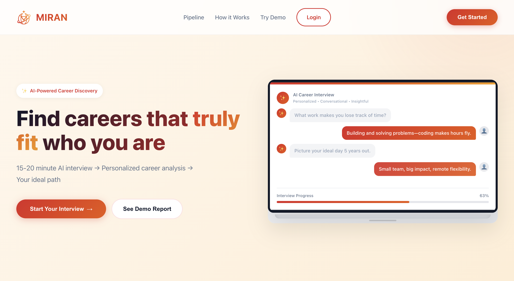
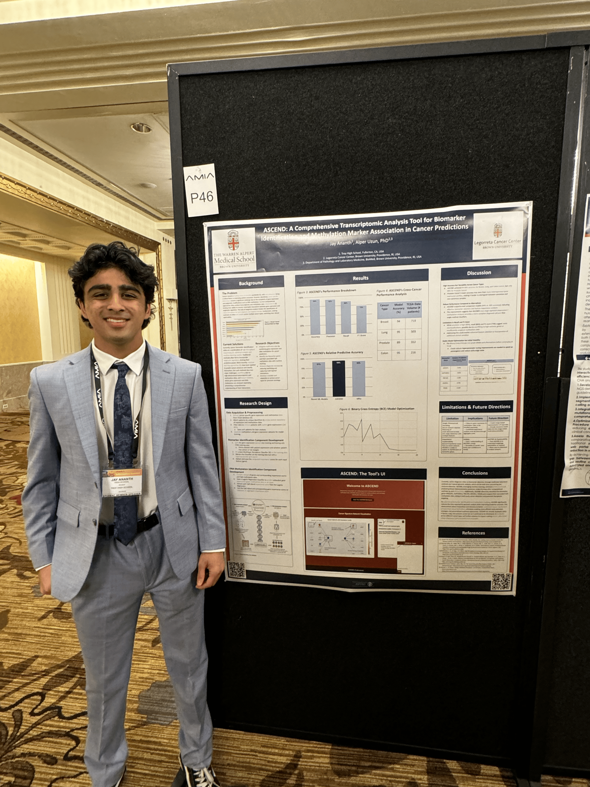
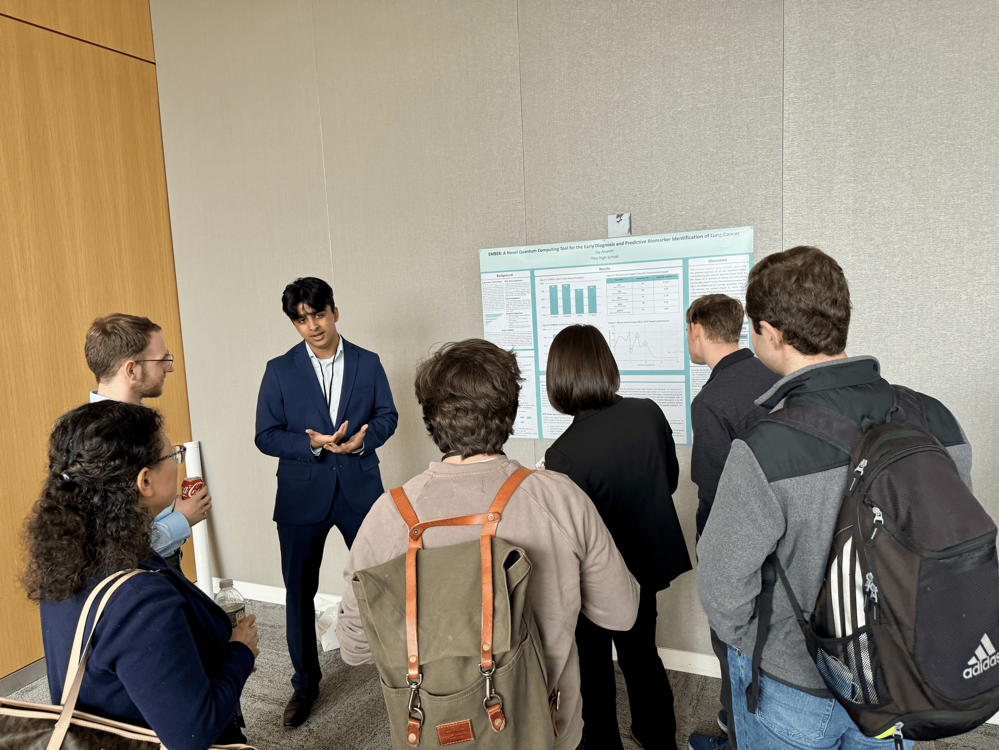
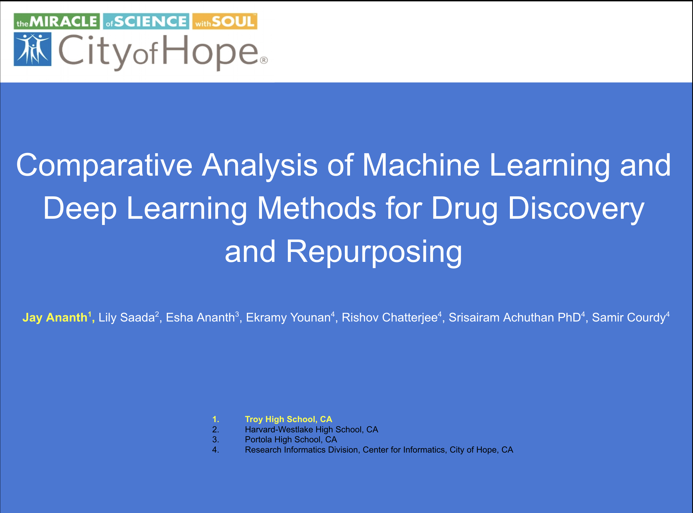

Using AI to help students find and pursue the career path for them. Interviews on demand, clarity in an instant.
Building a personalized AI-powered career coaching platform that conducts natural voice conversations with students to understand their authentic interests, values, and aspirations. The platform leverages advanced AI to provide tailored career insights, job recommendations, and actionable execution tools including optimized resumes and strategic action plans.

Conducted thorough market research including 1,000+ customer and competitor surveys to provide strategic marketing recommendations for product positioning and market entry strategies.
Developed ASCEND (Advanced System for Cancer Epigenetic Network Discovery), a sophisticated deep learning tool designed to determine various cancers' predictive methylation markers and biomarker genes. This project aimed to identify epigenetic signatures that could improve early cancer detection and personalized treatment approaches.
The system processes complex genomic data to uncover patterns in DNA methylation—a crucial epigenetic modification that plays a significant role in cancer development and progression. By identifying specific methylation markers, ASCEND contributes to the growing field of precision oncology.
- Student Research Poster Presenter — American Medical Informatics Association (May 2025)
- Backed by Brown University

Developed EMBER (Epigenetic Methylation-Based Enhancement for Recognition), a groundbreaking quantum computing framework for lung cancer diagnosis and staging. Achieved 93% accuracy by using quantum superposition and entanglement to more accurately simulate real-world biological processes in cancer progression.
This project represented a novel application of quantum computing principles to medical diagnostics, specifically leveraging quantum mechanical properties to model the complex epigenetic changes that occur in lung cancer. The framework demonstrated how quantum computing can potentially revolutionize medical imaging and diagnostic accuracy by processing biological data in ways classical computers cannot.
- Youngest First-Author Presenter — Society for Critical Care Medicine (Feb 2025)
- Research Presenter — MIT & Mass General Brigham (Sep 2024)
- Top 5 CA Research Project — US DOD: National JSHS (May 2024)

Developed a machine learning framework to predict ligand-receptor binding for computational, efficient, and accessible drug discovery and repurposing. This project focused on accelerating the drug development process by using AI to predict how potential drug molecules would interact with biological targets.
The framework enables researchers to screen thousands of potential drug candidates computationally before expensive laboratory testing, significantly reducing the time and cost of drug discovery. The tool was designed with accessibility in mind, making advanced computational drug discovery techniques available to smaller research institutions and labs.
- American Chemical Society: Distinguished Researcher (Mar 2023)
- Backed by City of Hope's Beckman Research Institute
